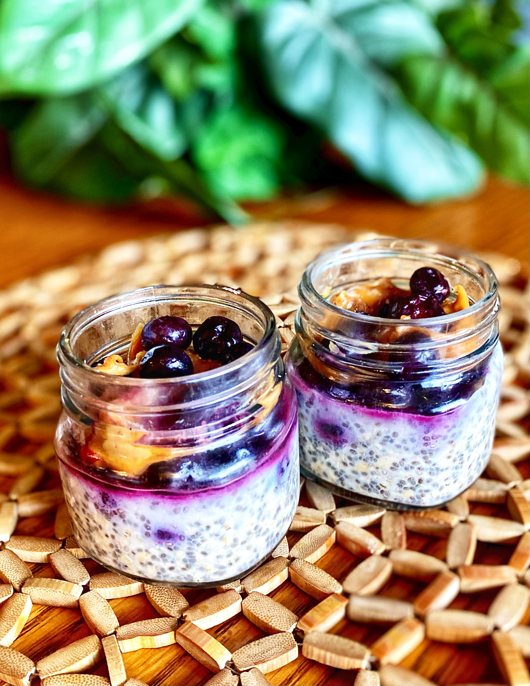

Cleves Overnight Oats Recipe

Description
Looking for a delicious breakfast that's also ready to eat
when you wake up? Then give these healthy and tasty overnight oats
a try! They'll be ready to grab out of the fridge in the morning and
they taste like dessert. Overnight oats are so convenient and delicious
that I bet you'll be coming back to this recipe multiple times.
Ingredients
- ¾ cup almond milk
- ½ cup oats
- 2 tablespoons peanut butter
- 2 tablespoons chia seeds
- 2 tablespoons agave nectar
- 1 scoop vanilla protein powder
- 1 cup frozen blueberries
Steps
- Mix almond milk, oats, peanut butter, chia seeds, agave, and protein powder in a bowl until well combined. Divide mixture between 2 Mason jars. Top each jar with 1/2 cup blueberries. Refrigerate for 8 hours, or overnight.
Nutrition Facts
Per Serving: 435 calories; protein 27.9g; carbohydrates 52g; fat 14.9g; cholesterol 6.3mg; sodium 244.8mg.